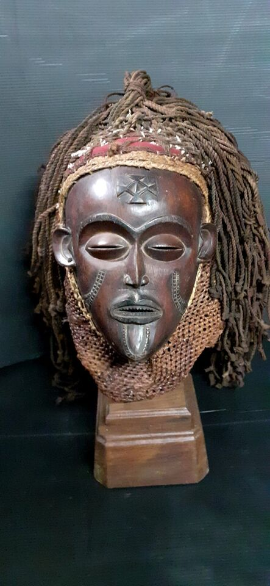
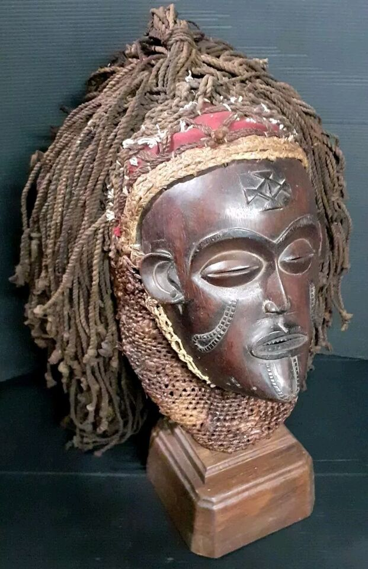
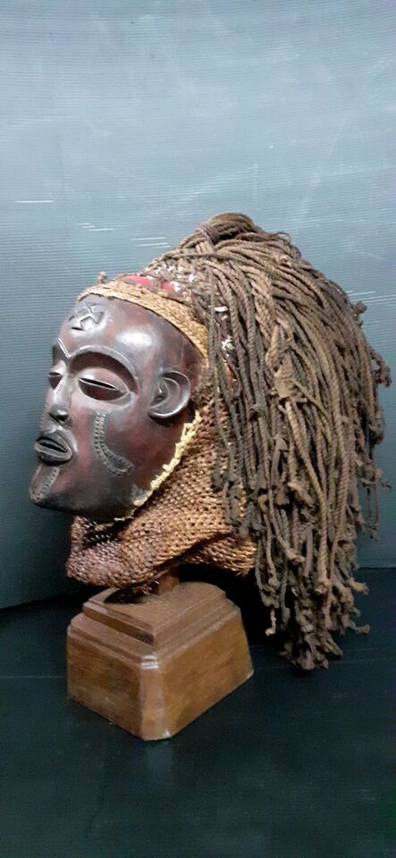
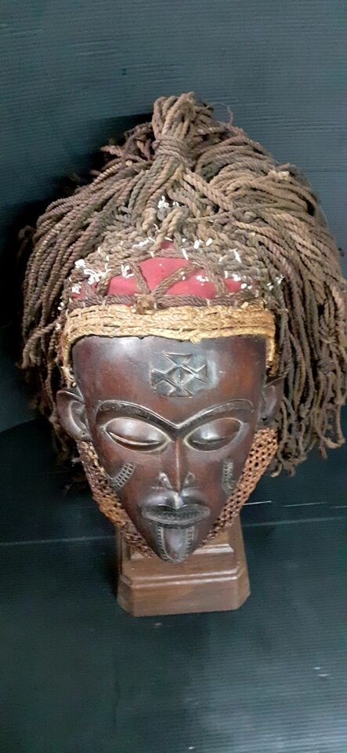
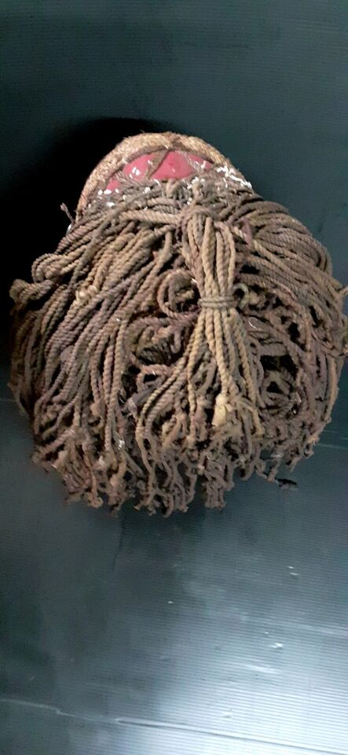
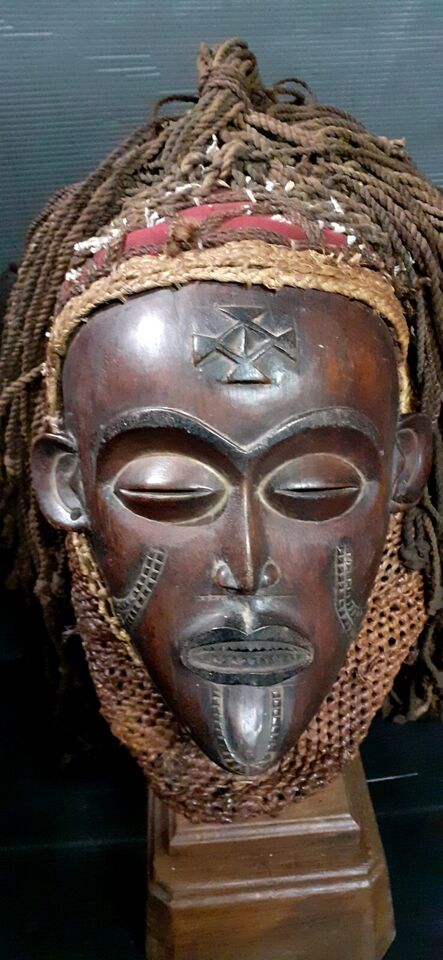

Historique masque Tchokwé
Prix : 1500 €






Nom: Masque Tchokwé
Hauteur: 25 cm
Ethnie: Tchokwé
Pays d'origine: Angola
Zone de collecte: Luanda
Matière: Brois
Prix: 1500 €
Le masque "pwo" (femme) ou "mwana pwo" (jeune femme) symbolise l'ancêtre féminin et apparaît dans des danses propices à la fécondité. Porté par un homme qui mime la danse des femmes et leur apprend la grâce des manières. Le masque "Pwo" de l'ancêtre féminin est toujours porté par des hommes qu'ils transforment en êtres puissants. Leur exhibition devant l'assemblée villageoise a un caractère magique : ils apportent prospérité et fécondité. Mais, maîtrisés par les sorciers, ils peuvent devenir des "wanga" maléfiques. L'acquisition d'un masque est une sorte de mariage mystique. Le danseur remet au sculpteur un anneau de cuivre, prix symbolique de la «fiancée». Ce mariage impose des obligations morales et rituelles; les enfreindre entraîne le courroux de l'esprit de l'ancêtre et des punitions attribuées à sa magie. Après la mort du danseur, le masque est souvent enterré par suite d'une peur superstitieuse. On l'enfouit en un lieu isolé et marécageux. Un bracelet signifiant la restitution de la «dot» est placé près du masque. Le danseur ensevelit de la même manière un masque qui ne peut plus servir. L'exhibition du masque féminin "Pwo" dispense la fécondité aux spectateurs. Il danse parfois avec une statuette représentant un enfant porté sur le dos de sa mère. Le danseur déguisé en femme porte des seins postiches, une jupe de cotonnade et une lourde ceinture perlée en forme de croissant. Il tient un hochet et un chasse-mouches. La danse consiste en mouvements du dos scandés par le sautillement de la ceinture. En étudiant l'allure sérieuse et les gestes élégants de "Pwo", les femmes apprendraient la grâce des manières. Le masque doit être sculpté selon les normes, et refléter l'idée collective des esprits ancestraux. Certains masques cependant sont individualisés; le sculpteur prend alors une certaine liberté quant aux proportions et aux traits du visage (forme du nez, de la bouche ou des oreilles). L'artiste s'inspire de la physionomie d'une femme admirée pour sa beauté. Comme il doit travailler loin des regards féminins, il observe longuement son modèle, souvent pendant de nombreux jours, le temps qu'il lui faut pour mémoriser ses traits. Les tatouages et la coiffure de la femme inspirent également le sculpteur. "Cihongo" et "Pwo" figurent souvent ensemble, en tant que protecteurs, sur le dossier de chaises. Le plus souvent, le masque "Pwo" est symbolisé par un macaron gravé ou en bas-relief sur des bâtons, des peignes, des sanza. D'après Marie-Louise Bastin